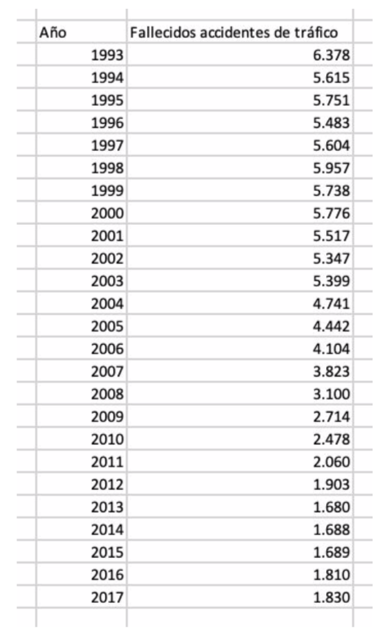
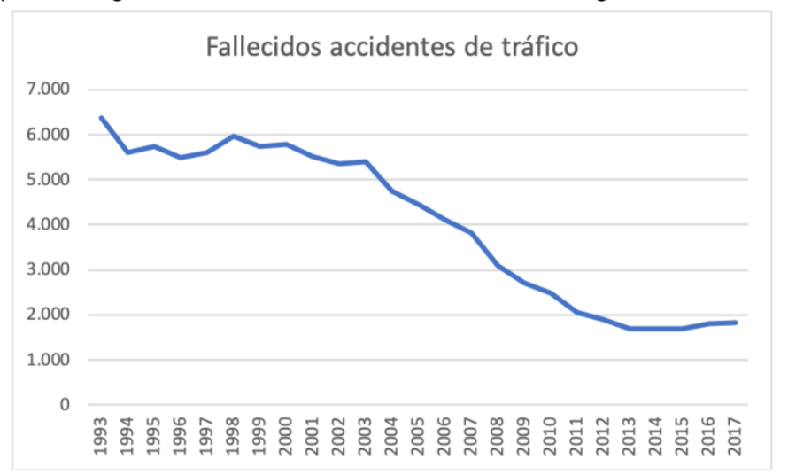
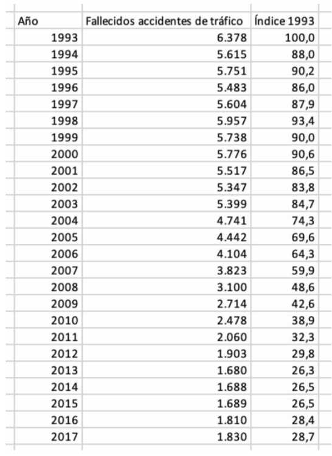
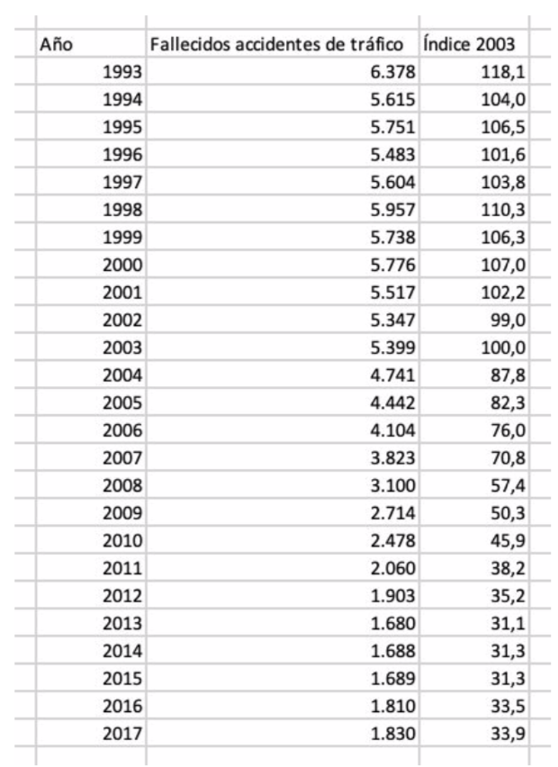
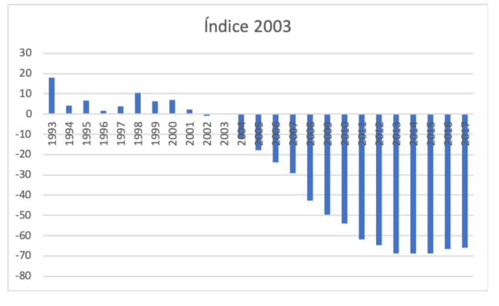
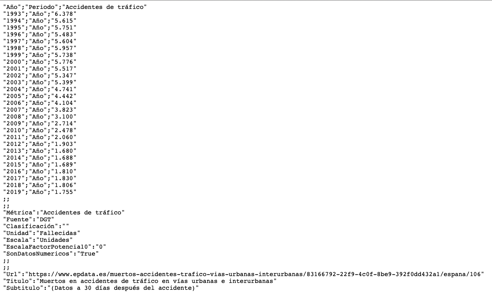
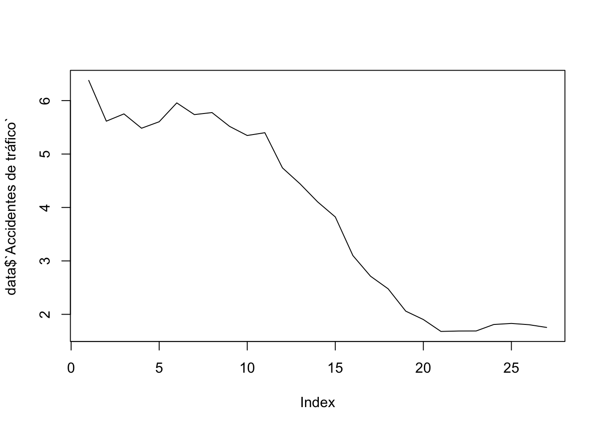
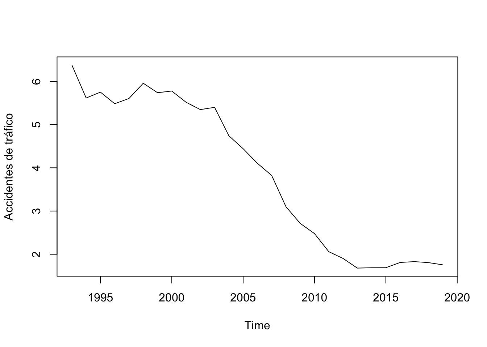

2.4 Números índices
Cuando tenemos datos a lo largo del tiempo, conviene compararlos en base a un valor determinado llamado periodo base. Así, los números índices muestran el movimiento de valores en una serie de tiempo convirtiendo las cantidades reales medidas en forma de índice o cantidades relativas. Estos valores se especifican en relación con un período base, por lo general designado como 100 o 100%.
Por ejemplo, consideremos los datos anuales del número de fallecidos en accidentes de tráfico 30 días después del accidente:

Podemos representar gráficamente estos datos con un sencillo diagrama de líneas:

De este modo, si consideramos como periodo base el año 1993, los números índices del resto de años se calculan dividiendo el número de fallecidos en cada año entre el número de fallecidos en 1993 (multiplicando por 100), es decir:
\(I_{t,1993}=\frac{x_t}{x_{1993}}\cdot 100\)
Así, obtenemos:

Vemos entonces que, en porcentaje, la disminución en 1994 respecto a 1993 fue del 12% (número índice = 88).
Puede interesar elegir otro periodo base. En nuestro ejemplo, vemos que a partir de 2003, se produce una disminución bastante significativa en el número de fallecidos debida, probablemente, al impacto de campañas de seguridad vial. Si ahora consideramos como periodo base el año 2003, tendremos:
\(I_{t,20033}=\frac{x_t}{x_{2003}}\cdot 100\)

Podemos representar esa variación en base al año 2003 con un diagrama de barras:

2.4.1 Números índices (Práctica con Excel©)
Para realizar esta práctica, debe tener descargado en su ordenador el archivo 1.practicas.xlsx y abrir la hoja/pestaña Nº accidentes.
En el siguente vídeo se muestran los pasos para realizar la práctica.
2.4.2 Números índices (Práctica con R)
Para realizar la práctica en R, debemos cargar los datos. El archivo original está disponible en este enlace
Puede descargar el archivo en formato csv (Comma Separated Values) en su ordenador. Le pedirá que se registre.
La otra opción es visualizar el contenido de ese archivo en este enlace

Vemos que los datos están en 3 columnas (de nombres “Año”; “Periodo”; “Accidentes de tráfico”) separados por puntos y comas. Debajo, vemos varias filas de metadatos del documento.
Prodecemos a cargar los datos desde la web y almacenarlos con el nombre data. Primero cargamos el paquete (library) readr de R y utilizamos la instrucción real_delim que nos permite leer el archivo. Finalmente indicamos con delim = “;” que los datos están separados por puntos y comas. Así, ejecute el siguiente código en RStudio:
library(readr)
data <- read_delim("https://raw.githubusercontent.com/1fjmanzano/bioestadistica/master/fallecidos_trafico.csv", delim = ";")## Warning: One or more parsing issues, see `problems()` for details## Rows: 41 Columns: 3
## ── Column specification ────────────────────────────────────────────────────────
## Delimiter: ";"
## chr (2): Año, Periodo
## dbl (1): Accidentes de tráfico
##
## ℹ Use `spec()` to retrieve the full column specification for this data.
## ℹ Specify the column types or set `show_col_types = FALSE` to quiet this message.Vemos que nos han aparecido algunos mensajes de aviso. En la ventana Environment (arriba a la derecha) verá que ha aparecido un elemento llamado data, de tipo spec_tbl_df (data frame) con 41 observaciones de 3 variables. Puede visualizar su contenido haciendo clic en el icono de la derecha o, también, ejecutando la orden View(data) en la consola.
Arriba a la izquierda le aparecerá una ventana con el contenido cargado en data. Vemos que disponemos de datos desde 1993 hasta 2019.
Procedemos a la limpieza del archivo antes de obtener los números índices. Vemos que para nuestra práctica, únicamente necesitamos las filas 1 ,2, 3, …, 27, es decir, nos sobran las filas 28:41. Vamos a seleccionar las filas 1 a 27. En nuestro conjunto de datos (data frame) necesitamos especificar dos dimensiones, filas y columnas. Para ello, usamos corchetes con la sintaxis objeto[filas,columnas]. Con la instrucción 1:27 antes de la coma (filas), seleccionamos las filas 1 a 27. Después de la coma no indicamos nada. Seguimos guardando los datos con el nombre de data.
data <- data[1:27,]Si comprueba el resultado, verá que han desaparecido las filas 28:41. En la ventana de Environment verá que se ha actualizado la dimension de data (ahora 27 obd. de 3 variables).
Para nuestro propósito, nos sobra la seguna columna Periodo. Procedemos a eliminarla usando corchetes. Ahora, como es una columna, debemos indicar la instrucción -2 (elimina la segunda columna) después de la coma.
data <- data[, -2]Puede comprobar que ha desaparecido la segunda columna (27 obs. de 2 variables).
Vamos a obtener un gráfico con los datos. Queremos representar los datos de la segunda columna Accidentes de tráfico. Para indicar a R que esos datos son los que queremos, usamos el símbolo del dólar $ después del nombre del dataframe. Además, como el nombre de la variable Accidentes de tráfico tiene espacios, debemos escribirlo entre comillas simples. R y en general cualquier lenguaje de programación, “se llevan mal” con los espacios en blanco. Para generar el gráfico, usamos la función plot().
plot(data$`Accidentes de tráfico`)
R ha generado un gráfico de puntos con los 27 datos disponibles (de 1993 a 2019). Si queremos un gráfico de líneas, no tenemos más que añadir una coma y la instrucción type = “l”.
plot(data$`Accidentes de tráfico`,type = "l")
Finalmente, vemos que en el eje X (horizontal) no aparecen los años. Para ello, podemos considerar los datos como una serie de tiempo time.series con la función ts() del dataframe data (quitando la primera columna) e indicando el comienzo y el final para, finalmente, obtener el gráfico con plot().
time.series <- ts(data[,-1], start=1993, end=2019)
plot(time.series)
Vamos a generar en el dataframe data una columna con los números índices en base al número de fallecidos por accidente de tráfico en 1993. Comenzamos guardando el la variable fallecidos1993 dicho valor (de 6.378). Para ello, indicamos que en la columna Accidentes de tráfico de data queremos el primer valor ([1]).
fallecidos1993 <- data$`Accidentes de tráfico`[1]
fallecidos1993## [1] 6.378Cuidado porque el valor numérico tiene un punto decimal lo que indica que la unidad de medida es de miles como podíamos observar en el eje vertical de los gráficos anteriores.
Ahora, definimos una nueva columna i1993 sin más que dividir los valores de la columna Accidentes de tráfico entre el valor fallecidos1993.
data$i1993 <- data$`Accidentes de tráfico`/fallecidos1993Puede comprobar que, ahora. el dataframe data tiene 27 obs. de 3 variables. La columna que acabamos de generar, tiene valores numériicos con muchos decimales. Podemos redondear a 2 decimales.
data$i1993 <- format(round(data$i1993,2))Si queremos obtener los números índices en base a 2003, no tenemos más que ejecutar el siguiente código teniendo en cuenta que, ahora, queremos el valor 11 (correspondiente al año 2003) de la columna Accidentes de tráfico.
fallecidos2003 <- data$`Accidentes de tráfico`[11]
data$i2003 <- data$`Accidentes de tráfico`/fallecidos2003